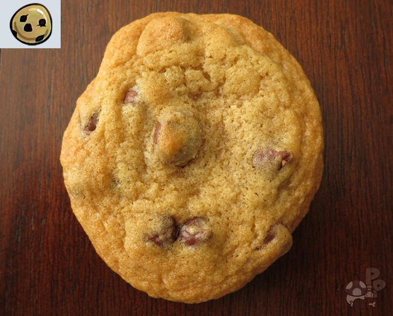

Castle Crashers: Chocolate Chip Cookies

Return to top
Return
- 2 ¼ cup All-Purpose Flour
- 1 tsp Baking Soda
- 1 tsp Salt
- 1 cup Butter
- ¾ cup Granulated Sugar
- ¾ cup Brown Sugar
- 1 ½ tsp Vanilla Extract
- 2 Eggs
- 2 cups Chocolate Chips
- Pre-heat your oven to 375°F. I recommend that you get your butter to room temperature
so it is easier to work with. To do that let it sit out for about a half hour before you are
going to start working with it. Once you are ready to start baking, mash the butter until it
appears smooth. I used a spoon at the point.
- Using a stand or hand mixer, combine the sugar with butter.
add the vanilla extract and eggs. I recommend adding the eggs one at a time.
Doing this helps combine them with everything else better.,
- In a separate bowl, combine the flour, baking soda, and salt.
Start to slowly mix the flour into the butter mixture. I tend to do it in 3-4 batches to make
sure the flour combines well with everything.
- Stir in the chocolate chips. At this point use a spoon.
You don’t want to destroy the chips with a stand or hand mixer.
Line a baking sheet with aluminum foil and spray with a non-stick spray.
I take about a tablespoon of the dough and place it on the pan.
Once you have the pan filled, place in the oven and bake for about 8-11 minutes or
until golden brown. After you take the cookies out allow them to cool.